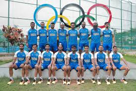
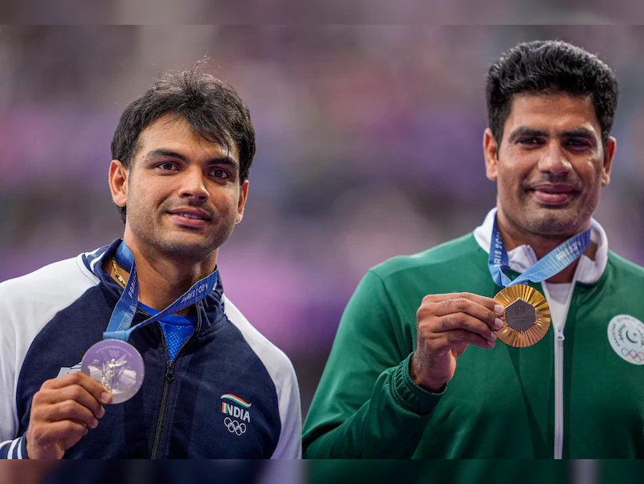
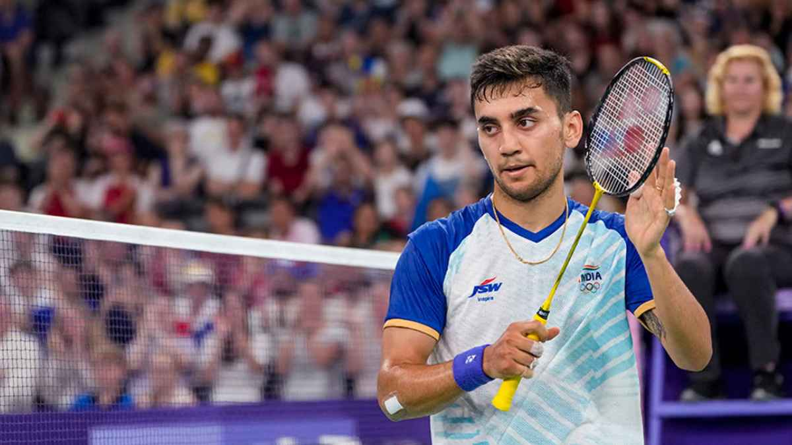
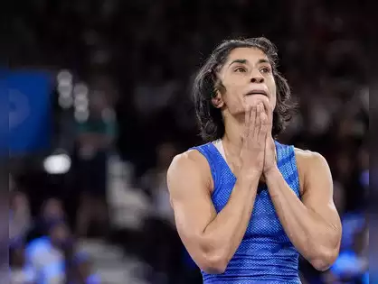

A total of 117 Indian athletes made up the contingent that went on the hunt for medals and sporting immortality at the Paris 2024 Olympics, which ran from July 26 to August 11. In all, India won six medals - a silver and five bronze - at the Paris 2024 Olympics.
Manu Bhaker's Historic Achievement

India's journey at the Paris 2024 Olympics began on a high note with Manu Bhaker making history. Bhaker won a bronze medal in shooting, becoming the first Indian woman to secure an Olympic shooting medal. Her remarkable achievement didn’t stop there—she followed it up by winning a mixed team 10m air pistol bronze with Sarabjot Singh. Bhaker's dual victories made her the first Indian to claim two medals in a single edition of the Olympics, setting a new benchmark for Indian athletes.
Swapnil Kusale’s Shooting Success

Adding to the shooting accolades, Swapnil Kusale won a bronze medal, marking India's highest medal haul in shooting at a single Olympic Games. Kusale’s performance underscored the growing strength of Indian shooters on the global stage and contributed significantly to the country's overall medal tally.
Men’s Hockey Team Repeats Tokyo Glory
The Indian men's hockey team mirrored their Tokyo 2020 success by clinching a bronze medal in Paris. Their victory was a testament to the team's resilience and skill, reflecting the consistent growth of Indian hockey. The team’s ability to perform under pressure showcased their competitive spirit and dedication.
Neeraj Chopra’s Silver Lining
Neeraj Chopra continued his stellar career by winning a silver medal in the javelin throw. This achievement solidified his status as one of India's most successful Olympians. Chopra’s performance in Paris added another prestigious accolade to his collection, reinforcing his dominance in the field.
Narrow Misses and Disappointments
India faced several near misses at the Paris Olympics, with athletes like Lakshya Sen, Mirabai Chanu, and Manu Bhaker finishing fourth in their events. These close calls were a source of heartbreak, as each athlete had the potential to secure additional medals for the country.
Vinesh Phogat’s Disqualification Woes
One of the most disappointing moments was Vinesh Phogat’s disqualification before the historic final. Phogat’s removal from the competition was a significant blow, depriving India of a chance to add another medal to its tally. Her disqualification was a stark reminder of the unpredictable nature of the Olympics and the challenges faced by athletes.